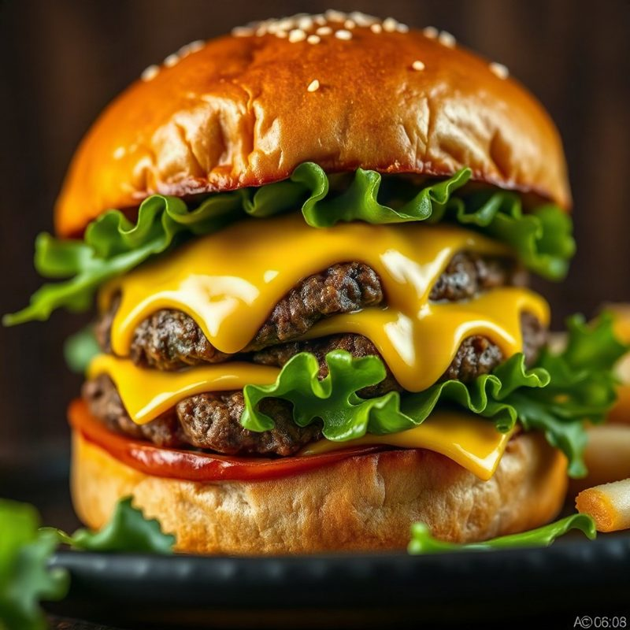

QUI SOMMES NOUS?

L'AVENTURE CLICK BURGER
Tout a commencé en 2018, quand deux amis passionnés de burgers ont eu une idée un peu folle : créer un restaurant où chacun pourrait inventer le burger de ses rêves. C’est ainsi qu’est né Burger Factory, devenu Click Burger, un lieu unique où la créativité est reine !
Notre mission ? Transformer chaque repas en une expérience artistique. Nous sélectionnons rigoureusement nos ingrédients pour vous offrir le meilleur de la gourmandise, tout en vous laissant le contrôle total de votre assiette. Chez nous, vous n'êtes pas seulement un client, vous êtes le chef !
NOS VALEURS
Chez Click Burger, nos valeurs reposent sur la créativité, la qualité et le plaisir de partager. Nous croyons que chaque client mérite un burger qui lui ressemble. C’est pourquoi nous lui donnons la liberté de composer son propre burger en choisissant ses ingrédients préférés. Nous privilégions des produits de qualité, un service chaleureux et une expérience simple et amusante. Notre objectif est de faire de chaque visite un moment unique, où chacun peut laisser parler son imagination et savourer une création qui lui correspond. Chez Click Burger, un clic, un choix, un burger à votre image !
NOTRE OFFRE
Chez Click Burger, notre offre repose sur un concept original : permettre à chaque client de créer le burger de ses rêves ! 🍔 Grâce à un large choix de pains, de viandes, de fromages, de sauces et de garnitures, chacun peut personnaliser son burger selon ses goûts. Mais chez Click Burger, la créativité ne s’arrête pas là : nos clients peuvent également imaginer et créer leurs propres ingrédients et recettes, pour donner vie à des associations de saveurs uniques. Des recettes classiques aux créations les plus originales, tout est pensé pour laisser libre cours à l’imagination. Des accompagnements et des boissons viennent compléter l’expérience pour un repas gourmand et personnalisé.
Chez Click Burger, vous ne choisissez pas seulement votre burger, vous l’inventez !
NOS ENGAGEMENTS
Chez Click Burger, nous nous engageons à offrir à chaque client une expérience gourmande, personnalisée et de qualité. Nous mettons la créativité au cœur de notre concept en permettant à chacun de composer son burger et même d'imaginer ses propres ingrédients. Nous accordons une grande importance à la satisfaction de nos clients, à la fraîcheur des produits et à la diversité des choix proposés. Nous souhaitons également créer un environnement convivial où chacun peut exprimer ses goûts et découvrir de nouvelles saveurs. Notre engagement est simple : proposer des burgers qui ressemblent à nos clients, tout en leur garantissant un moment agréable et gourmand.